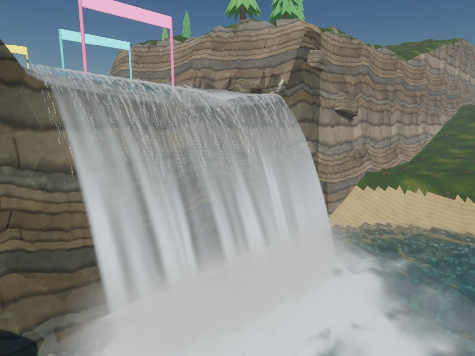
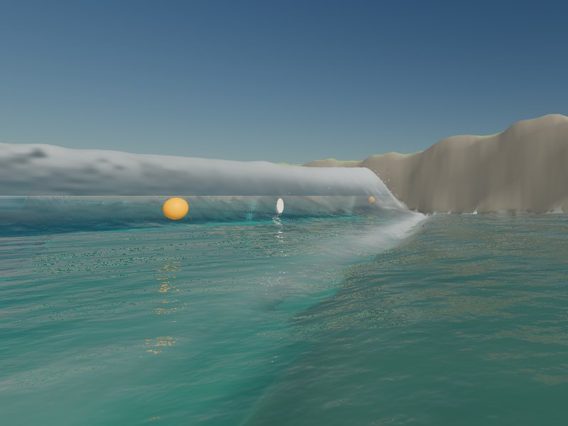
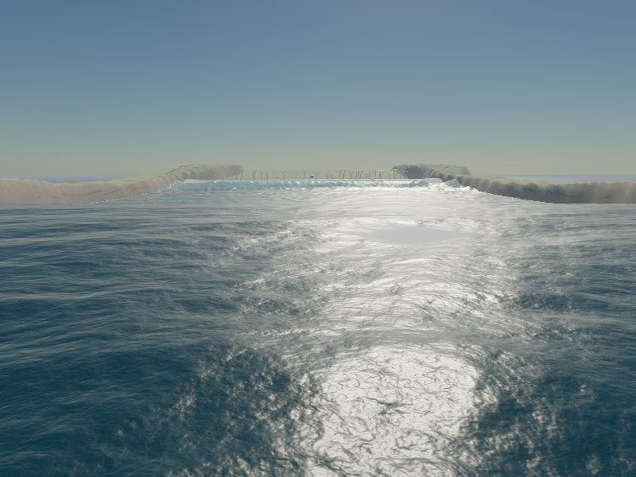
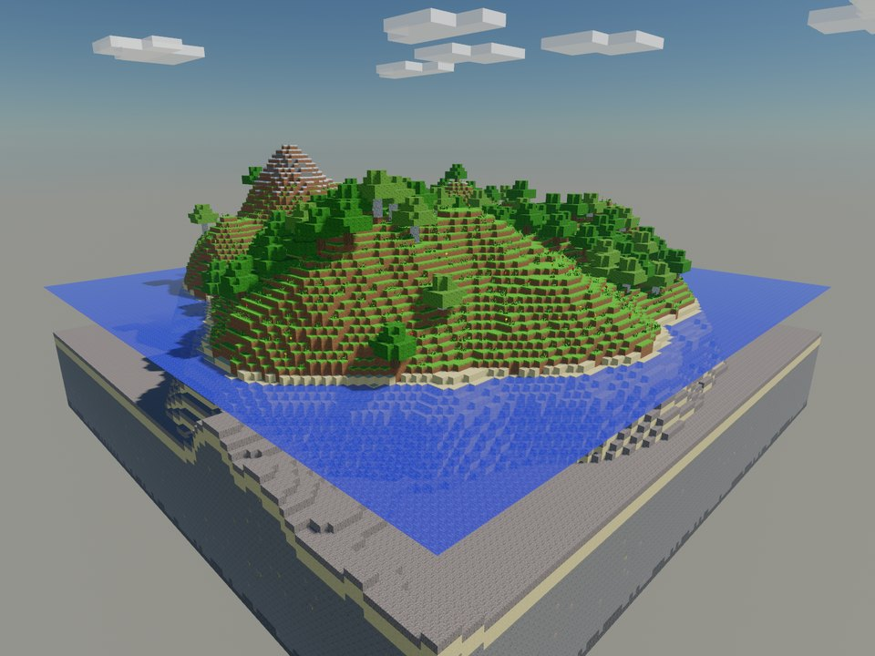
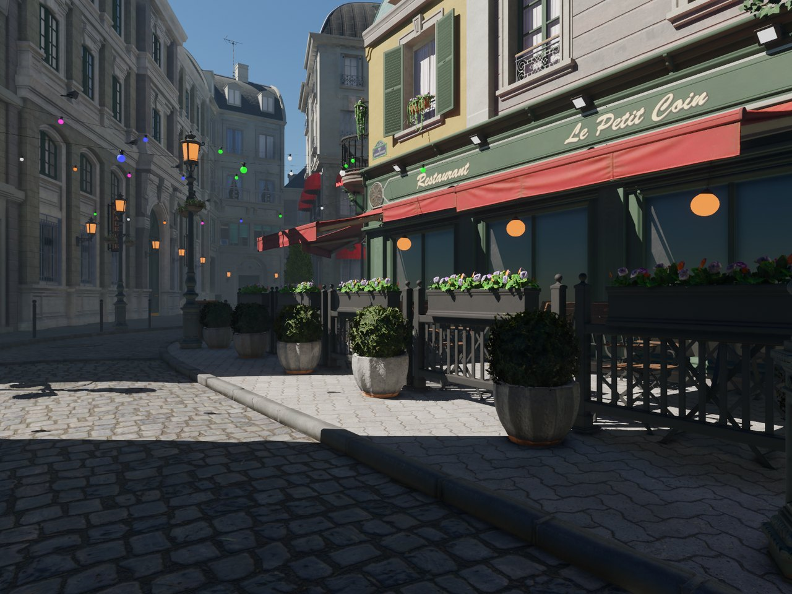
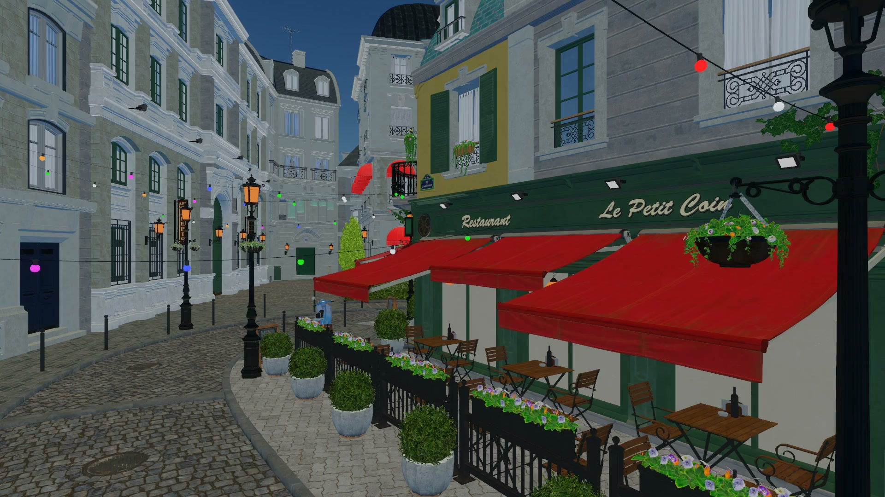
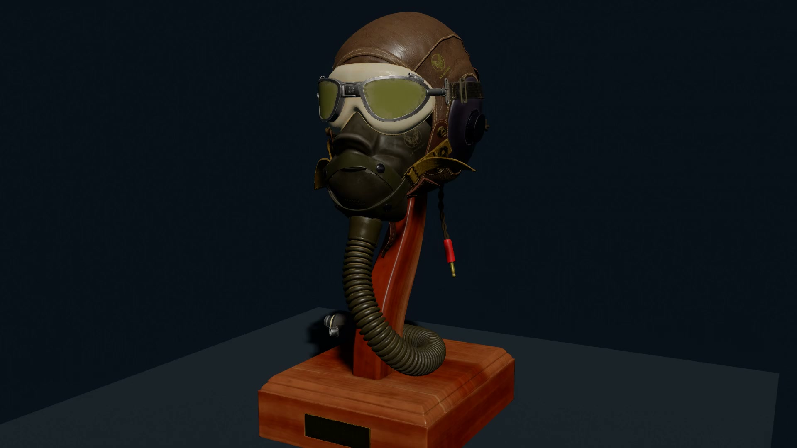

An agent-native 3D engine with a Rust core and TypeScript game systems.
Build in desktop and web editors. People and agents share a command catalog for development, play, and debugging. Run the simulation natively or in a Web Worker.
Shallow-water regions solved on the GPU, with breaking waves, falling sheets, wind, rain and a wind sea. The kernels compute the same bits on every GPU and in the browser, so the water replays with the rest of the world.

01 / Falling sheets
River falls
A river drops about 7 m over a rock lip into a plunge pool, ridden on an inner tube through three gates. The sheet leaves the lip glassy, whitens over the break-up length of a falling nappe and tears into strands; its streaks fall with the water.
Resident GPU waterBallistic sheetsProcedural rock
Headless capture of the sample at tick 1200, Apple M5 / Metal, MSAA + TAA, its HUD left out. Sample and controls.

02 / Breaking waves
Surf beach
A 2.4 m groundswell trips on a slanted reef and breaks along it. Steep, fast crests throw their top layer ahead of the face, conserving water exactly; you paddle into a wave and ride its face on a board.
Plunging lipsNon-hydrostatic pressureBoard and rider
shore_shots, along the breaking wave at tick 2100, Apple M5 / Metal.

03 / Wind sea
To the horizon
Beyond the simulated bay, an FFT wind sea in three cascades runs to the horizon; the region's water and the sea meet over a band without a seam.
FFT cascadesSeamless joinSun glint
ocean_shots, from the open sea toward the bay at tick 2100, Apple M5 / Metal.
04 / Floating bodies
Pool party
Floats, dinghies buoyed by their hulls and swimmers on a resident GPU field, in a breeze and 12 mm an hour of rain; guests cannonball off the board.
BuoyancyRain ringsCaustics
Headless capture at tick 900, Apple M5 / Metal, MSAA + TAA, its HUD left out.

05 / Block volumes
Blockcraft
A seeded 128 × 128 island of one-metre blocks. Break and place blocks; the engine's shallow water floods through a broken bank, pours and drains. The same game exports as a static WebGPU folder for itch.io.
The interactive renderer with baked probes and ray-traced shadows, and the research path tracer.

01 / Real-time
Bistro, walked
The ORCA Bistro exterior in the interactive renderer: 43,725 baked world probes for diffuse light, ray-traced sun shadows, TAA and GTAO. The Town walk sample walks it with collision.
Baked probe GIRay-traced shadowsTAA · GTAO
amoris serve capture at 1920 × 1080, Apple M5 / Metal, 26 October 2026; no frame-rate claim. The third-party model is prepared locally and not committed.

02 / Metal path tracing
Bistro, path-traced
The public Bistro exterior in sunlight, with multi-bounce lighting. An offline 1024 × 768 render at 512 samples per pixel, a 12-bounce limit, and textures capped at 512 px.
World-space probes light the ship and cargo meshes in a fixed sailing pose. The ocean keeps its existing sky, sun, and reflection lighting.
Baked probesMesh diffuse GIFixed pose
Earlier recording: sailing through MCP. A scripted pilot tests four steering forks, chooses an action, and takes reachable cargo aboard. Developer-mode automation · 2 crates collected · not an autonomous LLM player.

04 / Metal path tracing
Materials, up close.
The CC0 Flight Helmet: 94,722 triangles, six materials, and authored color, normal, and roughness maps. This offline Metal path-traced still shows its materials under multi-bounce lighting.
Pool party playing in the web editor, the dinghy selected. Connected to the real Rust host; the viewport is the engine's WebGPU renderer.Earlier recording ↗
↔
Desktop and browser
The same docked panels in a native desktop window or a browser. Viewport, hierarchy, inspector, assets, history, and a command palette.
{ }
Typed game scripts
Monaco loads declarations from the live component registry. Check TypeScript, then apply at a tick boundary.
⏸
Pause at the source
Set a TypeScript breakpoint, inspect variables, step the script, and follow an event back to its cause.
DeepSeek Flash reads a 30 m radar and sends game intentions. This recorded experiment uses a player gateway; the native replay reproduces the model’s actions and final world state.
Real model callsPlayer gatewayDeterministic replay
Six frozen microtasks, three fresh trials each. Two repairs and four gameplay features.
63
Native behavioral assertions
Positive, negative and boundary cases, plus types, determinism, fork, replay and reload.
15/18
Clean agent completions
Three provider disconnects happened after valid patches. Their artifacts and interrupted status stay in the data.
Small gameplay tasks, through the engine API.
Collection radius · parcel value scoring · collection victory · dash cooldown · once-only milestones · armored damage and defeat.
DeepSeek Flash inspects, writes and applies scripts using native developer MCP tools. The grader and reference source stay outside the candidate project.
One experimental task set and one model. Read the raw calls, final patches, elapsed time, token usage and cost upper bounds in the full report.
A depth prepass reduces overdraw in the Windows dense-grid workload. Metal now records each GPU frame on its own CPU timeline, with asynchronous readback.
1.6M
Cubes in the Windows workload
Dense grid · 1440p · 4× MSAA. Direct3D 12 and Vulkan, with RTX 5060 Laptop and Radeon 780M results below.
2,700
Metal frames accounted for
All captured GPU frames fit their own CPU submit/wait bounds within calibration tolerance. No missing or dropped records across nine M5 runs.
6/6
Metal prepass scenes match
Prepass off versus on: identical pixels and entity coverage in six fixed-scene comparisons.
Windows dense grid: depth prepass off → on
GPU time in ms — lower is better
Adapter / backend
Off
On
RTX 5060 Laptop / D3D12
51.330
16.216
RTX 5060 Laptop / Vulkan
42.505
16.591
Radeon 780M / D3D12
297.574
96.256
Provisional · Windows 11 · 1.6M cubes · headless 2560 × 1440 · 4× MSAA · GTAO and occlusion culling off. Median of three runs’ mean summed GPU pass times; 60 warm-up frames, then 200 measured on RTX or 100 on Radeon. The machine was shared and clocks were not locked. Low-overdraw scenes can be slower with the prepass; the default auto mode probes both choices. Conditions, auto-mode results and source data.
On Apple M5, 200,000 cubes at 1280 × 720, three cases × three rounds produce 2,700 captured frames. Per-slot timestamp ownership and deferred resolve keep GPU spans attached to the frame that submitted them, including through MoltenVK.
10 October 2026 · 4× MSAA · 60 warm-up + 300 measured frames per run. Clock-placement uncertainty: 53.5–79.9 µs. Run medians vary widely, so these captures establish profiling correctness; they do not establish a stable speedup. Every case and its spread.Raw traces and results.
Earlier high-detail mesh stress · 5 October
Render and wait for GPU idle — lower is better
A separate historical workload: 94,722 triangles per Flight Helmet. The 2.83M-triangle Bistro exterior took 12.02 ms mean render-and-wait at 1080p on Apple M5.
Mean wall time per completed frame
64 helmets 6.06M triangles
10.52 ms
256 helmets 24.25M triangles
28.81 ms
1,024 helmets 97.00M triangles
82.43 ms
5 October 2026 · forward renderer · 1920 × 1080 · authored PBR maps, directional shadows and postprocessing enabled. Static rendering without simulation, presentation or PNG encoding. Geometry counts precede culling; this is not a full-game FPS claim or a PT measurement. Method and p95.
The short version
A small technology map.
Simulation
Host
Rust · Bevy ECS
Rules
TypeScript · QuickJS-ng · oxc
Physics
Rapier · enhanced determinism
Presentation
Renderer
wgpu · WGSL
Targets
Metal · Vulkan · Direct3D 12 · WebGPU
Editor
React · dockview · Monaco · Electron
Interfaces
People
Desktop / web editor · CLI
Agents
CLI · MCP
Tools
HTTP · WebSocket · JSON Schema
Start with a running sample
Open a sample. Learn the API.
Build the host, open a sample, and learn the scripting and command surfaces.